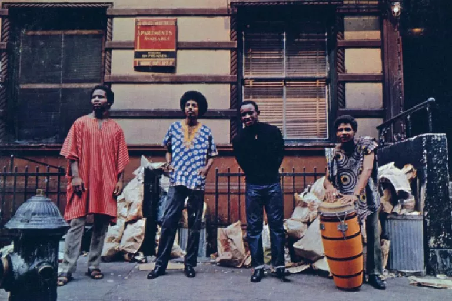

The History of Hip Hop: 1925 to Now
Origin of the term
The creation of the term hip hop is often credited to Keith Cowboy, rapper with Grandmaster Flash and the Furious Five. However, Lovebug Starski, Keith Cowboy, and DJ Hollywood used the term when the music was still known as disco rap. It is believed that Cowboy created the term while teasing a friend who had just joined the U.S. Army, by scat singing the words "hip/hop/hip/hop" in a way that mimicked the rhythmic cadence of soldiers marching. Cowboy later worked the "hip hop" cadence into a part of his stage performance , which was quickly used by other artists such as The Sugarhill Gang in "Rapper's Delight".Universal Zulu Nation founder Afrika Bambaataa is credited with first using the term to describe the subculture in which the music belonged; although it is also suggested that it was a derogatory term to describe the type of music. The first use of the term in print was in The Village Voice, by Steven Hager, later author of a 1984 history of hip hop.
Hip hop music, also called hip-hop or rap music, is a music genre developed in the United States by inner-city African Americans in the 1970s which consists of a stylized rhythmic music that commonly accompanies rapping, a rhythmic and rhyming speech that is chanted.
It developed as part of hip hop culture, a subculture defined by four key stylistic elements: MCing/rapping, DJing/scratching with turntables, break dancing, and graffiti writing.
Other elements include sampling beats or bass lines from records (or synthesized beats and sounds), and rhythmic beatboxing.
Don't like reading? We've got a solution!
The Early Years
Earl Tucker (aka Snake Hips), a performer at the Cotton Club, invents a dance style similar to today’s hip-hop moves. He incorporates floats and slides into his dance. Similar moves would later inspire an element of hip-hop culture known as breakdancing.
1940s
Tom the Great (a.k.a. Thomas Wong) uses a booming sound system to delight his audience. Wong also utilizes hip American records to steal music-lovers from competitors and local bands.
1950s
Parks Commissioner Robert Moses starts building an expressway in the Bronx. Consequently, middle-class Germans, Irish, Italians, and Jewish, neighborhoods gradually disappear. Businesses relocate away from the borough only to be replaced by impoverished African-American and Hispanic families. Along with the poor came addiction, crime, and unemployment.
1960s
James Brown records two songs that would further influence the drum programming in today’s rap music – “Sex Machines” with John Starks playing drums and “Funky Drummer” with Clyde Stubblefield on the drums.
1970s
DJ Afrika Bambaataa performs at the Bronx River Center. Bambaataa’s first battle against Disco King Mario sparks off the DJ battling that is now embedded in the culture.
1980s
Afrika Bambaataa and the Soul Sonic Force release the techno-heavy “Planet Rock” on Tommy Boy Records. The record samples portions of Kraftwerk's "Trans-Europe Express." Grandmaster Flash & the Furious 5 release “The Message” on Sugarhill Records. Kool Moe Dee humiliates Busy Bee in a spontaneous rap battle. Since then, emcee battling has become an inseparable part of hip-hop. Fab 5 Freddy and Charlie Ahearn co-produce Wild Style, a hip-hop film featuring Cold Crush Brothers, Grandmaster Flash, Grandwizard Theodore, DJ AJ, Grandmixer D.S.T, graf writers Lee, Zephyr, Fab 5 Freddy, Lady Pink, Crash, Daze, Dondi, and members of the Rock Steady Crew. Wild Style has since inspired several other hip-hop-themed movies.
1990s
N.W.A’s sophomore album N****z For Life sells over 954,000 copies in its first week of release, reaching #1 on the pop charts. The album paves way for many more hardcore rap albums that would follow. Busta Rhymes appears on A Tribe Called Quest’s “Scenario.” Cypress Hill (B-Real, DJ Muggs, and Sen Dog) release their self-titled debut, and initiate a campaign to legalize hemp. The Notorious B.I.G. is featured in the “Unsigned Hype” column of The Source magazine.
2000s
-
Puff Daddy reveals in an MTV interview that he will now be known as P. Diddy.
-
Eminem pleads guilty to one of two felony charges from an incident in 2000 when he pistol-whipped a man caught kissing wife Kim Mathers.
-
Prosecutors drop the felony assault charge in exchange for Eminem's guilty plea on carrying a concealed weapon.
-
On the heels of the 9/11 terrorist attacks in New York, two of the city's most revered rappers Jay-Z and Nas are in a different New York state of mind. After years of subliminal sniping, they finally take the gloves off and engage in a highly controversial lyrical face-off.
-
After Nas dropped "Ether," an earth-shattering response to Jay's equally venemous "Takeover," Jay re-emerges with "Super Ugly," (rhymed over Nas' "Got Yourself a Gun") in which Hov spilled his sexual relationship with Nas' baby-mama to disgusting effect. New York's Hot 97 FM asks call-in voters to decide a winner.
-
As votes are being tallied, Jay rushes to Hot 97 and offers an apology for the kiss-and-tell lyrics. His apology fails to deny Nas an outstanding victory. Regardless, fans would forever debate the battle.
2010s
-
Gang Starr co-founder and hip-hop icon Guru dies on April 19 after a grueling battle with cancer.
-
Bun B's third solo album, Trill OG, becomes the first album in five years to receive The Source magazine's 5-mic award.
-
Wyclef Jean declares for presidency of his native country Haiti. Jean's candidacy is eventually rejected by the electoral council